Selamat datang di website portofolio saya!
Halo! Nama saya Muhamad Nur Saifuddin,saya seorang fresh graduate yang memiliki ketertarikan besar di bidang teknologi informasi, desain grafis, dan UI/UX design. Saya senang mempelajari hal-hal baru, terutama yang berhubungan dengan teknologi dan kreativitas, karena saya percaya perkembangan digital yang cepat membutuhkan kemampuan adaptasi dan inovasi.
Selama ini saya sudah mencoba beberapa pengalaman, mulai dari membuat desain sederhana, mengembangkan website dengan framework modern, hingga menyusun tampilan antarmuka yang ramah pengguna. Selain itu, saya juga terbiasa bekerja dengan tim maupun secara mandiri, sehingga mampu menyesuaikan diri dalam berbagai situasi.
Saya memiliki motivasi yang kuat untuk terus berkembang, mengasah keterampilan, serta memberikan kontribusi positif dalam dunia kerja. Tujuan saya adalah bisa bergabung di perusahaan yang memungkinkan saya menggabungkan kemampuan teknis dengan kreativitas, sehingga dapat menciptakan solusi yang bermanfaat dan berdampak.
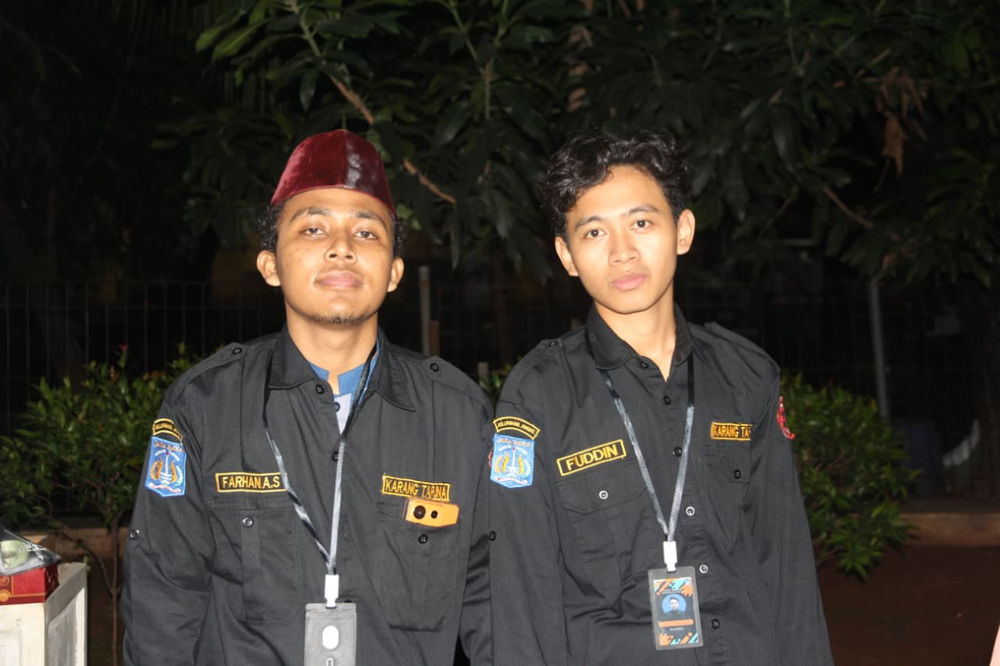
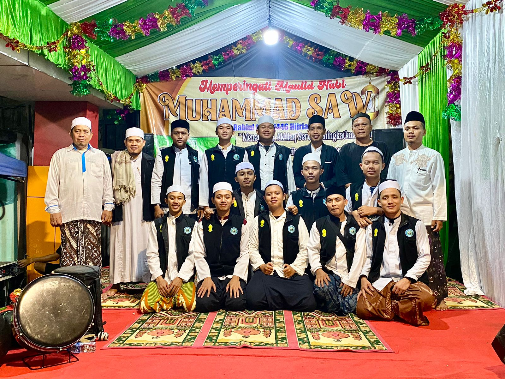
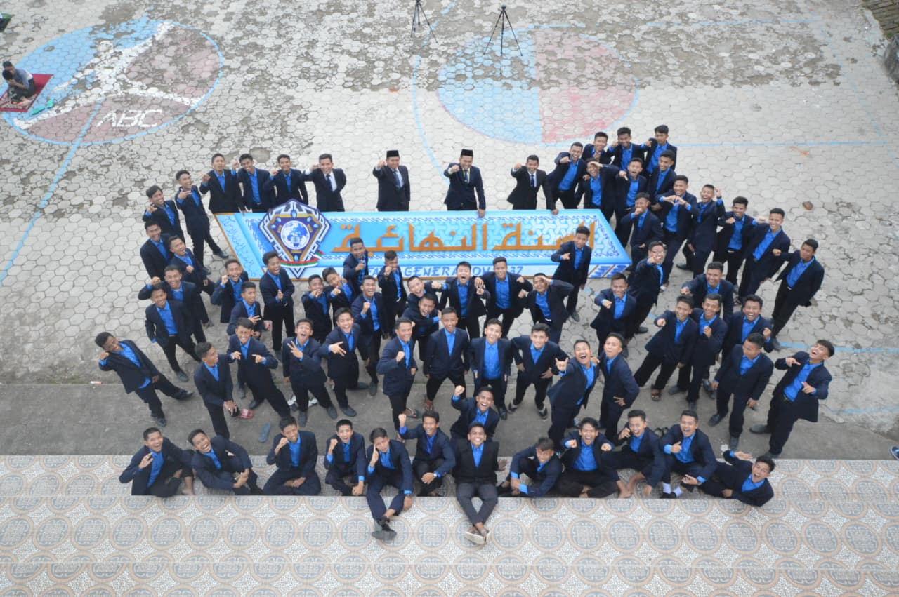
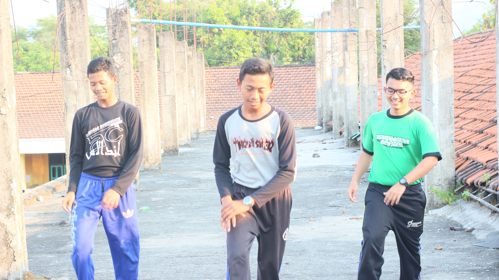
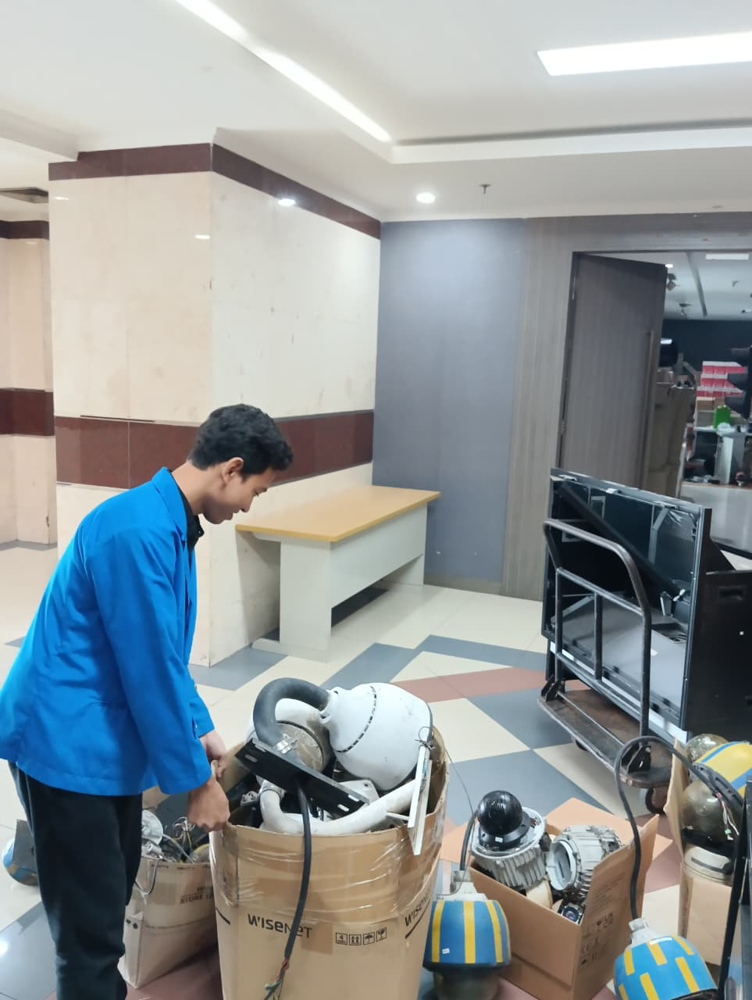
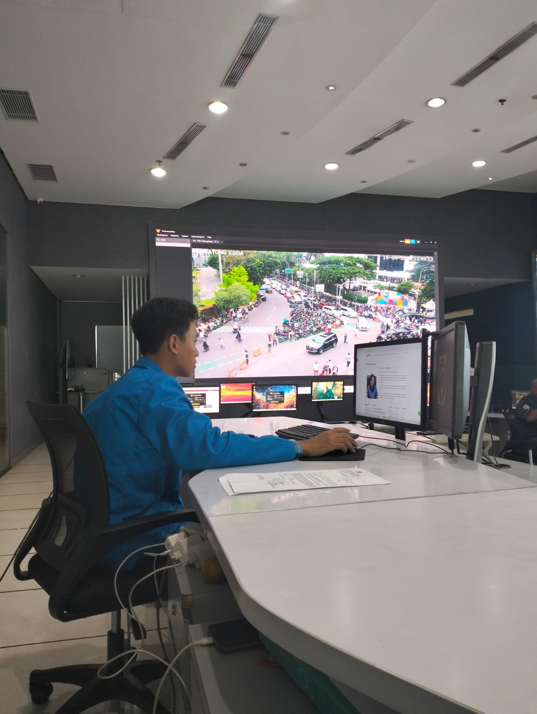
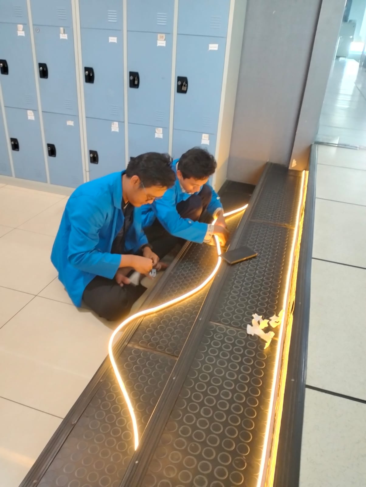
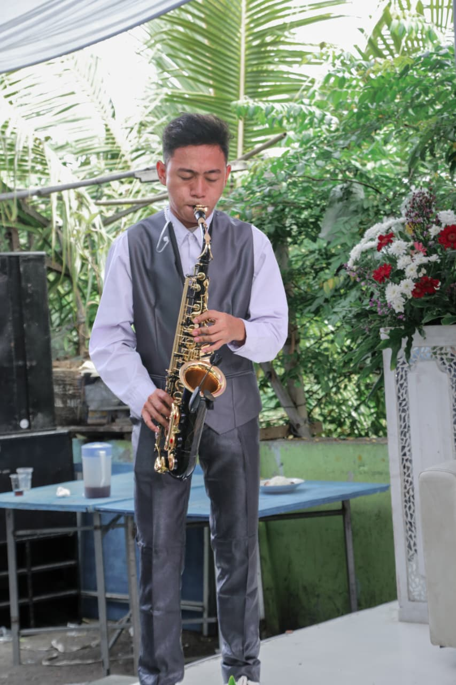
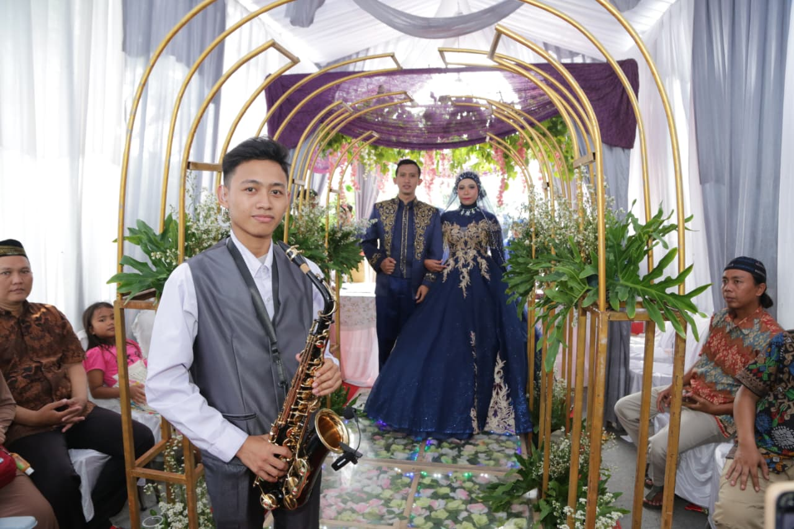
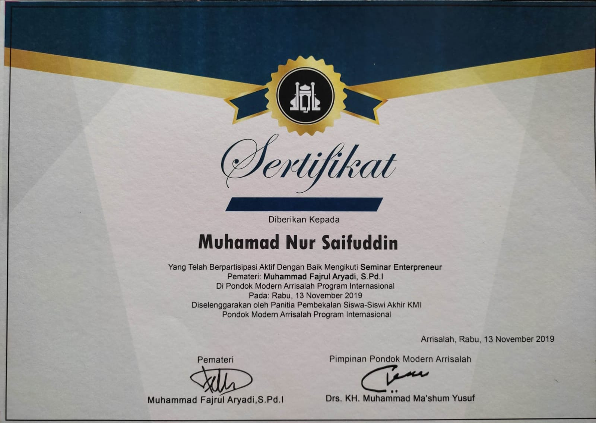
Seminar Enterpreneur
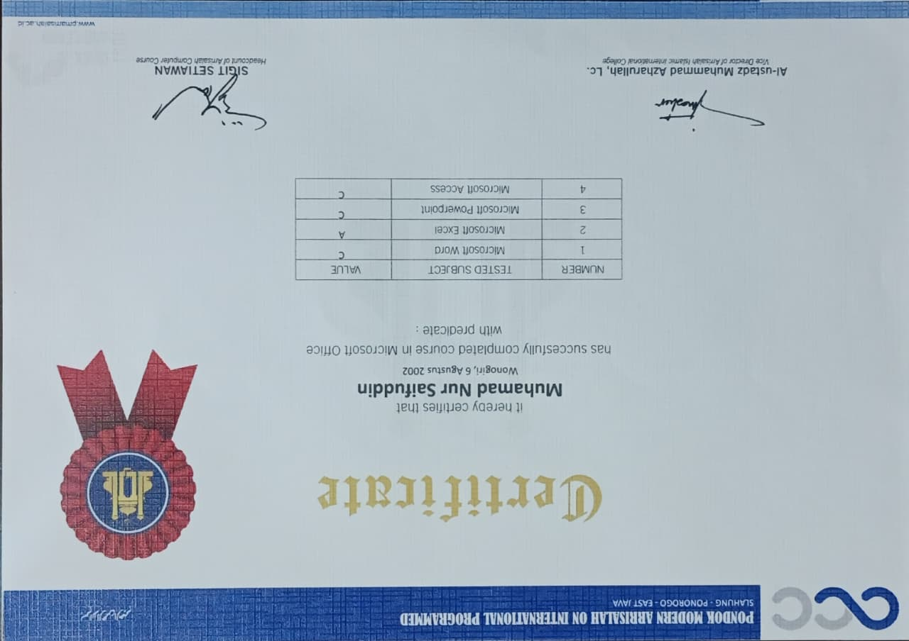
Sertifikasi Microsoft
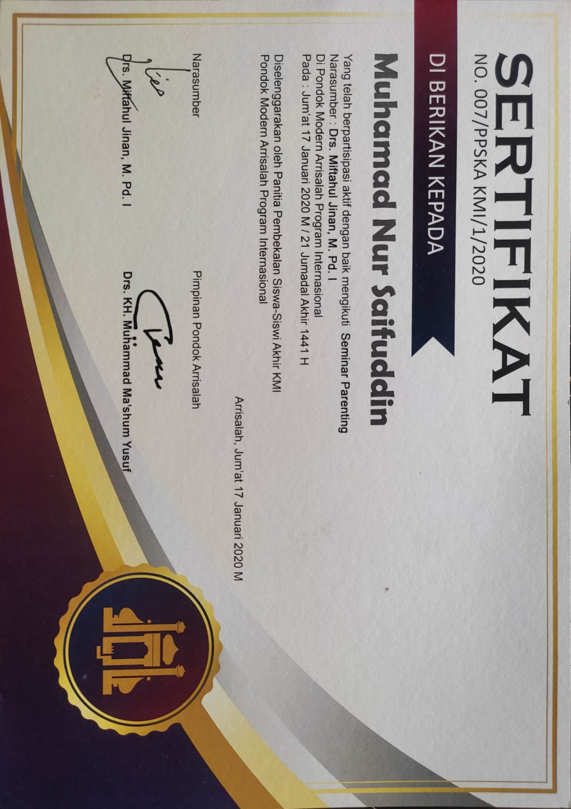
Seminar Parenting
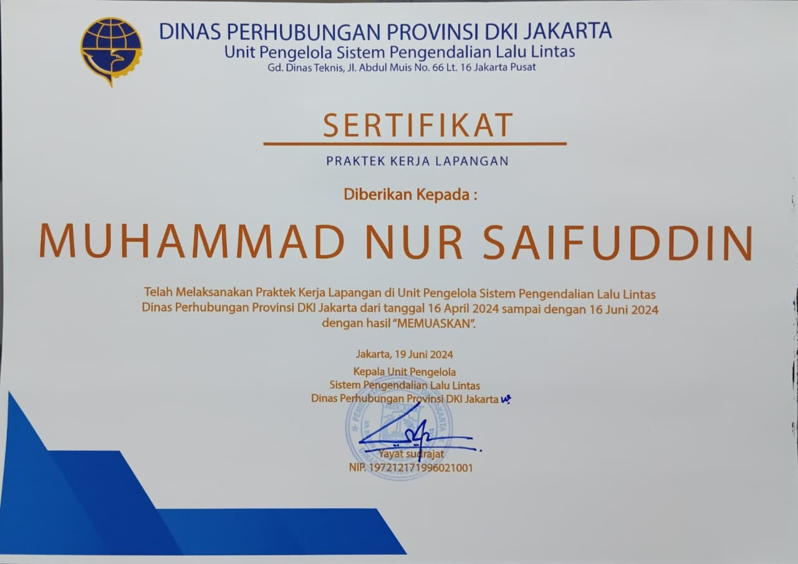
Magang di ATCS Dinas Perhubungan